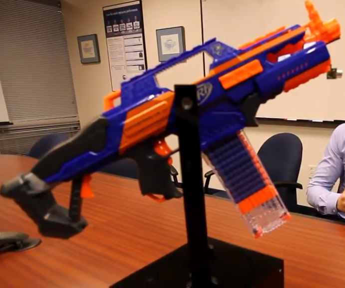

What
Perhaps a silly project, but I’ve had a Nerf sentry gun on my list of things to build for some time. I thought I could pull it off in a day or two, but in the end it took me a bit longer. Even with such projects you’re still dealing with mechanics, electronics and programming and can learn a great deal. We’l see what can be done with the components in the future.
Contents
Contents
When
There have been many Nerf sentry guns projects for quite some time on differerent maker blogs or online video communities. I’ve been thinking about building one from time to time and tried out components that could make individual parts of such a sentry gun, but haven’t put it all together so far.
Background
There’s quite a few Nerf sentry gun projects on the internet. I guess a lot of hobbyist robotics builders have these toy guns lying around and then eventually build something they’ve dreamed of as a kid out of them. They turn up in office spaces as past time between employees at tech companies. Meanwhile there are even miniature USB rocket launchers sold as office gadgets.
What made me feel alot better is when I found this video [1] of engineers at Cypress Semiconductor building such a Nerf sentry gun to demonstrate their latest Bluetooth BLE technology. I hope there will always be companies that understand that playing is part of learning and that allow employees to have some fun and work.
How
The Nerf Gun
I have the “Nerf Distruptor” which I got some years ago for cheap (<15 Eur). There are other Nerf guns that can auto-reload and even have electronics to do so. They are of course much easier to electronically control, but I won’t be buying any more toy guns.
The Nerf gun I have has a six-shot barrel, but since it doesn’t automatically load we need to get creative. To load it I need to pull the top sled back to load and then pull the trigger to fire. I found that you can keep the trigger pressed and only pull the sled back and it will also fire. The barrel automatically loads the next of the six available shots.
Mechanics - Aiming
Some time in September of 2014 I had experimented with the quite powerful mg994 servo motors. Servo motors have the advantage that they can be set to an exact angle by a microcontroller.
In August of 2018 I followed up with aluminum extrusions.
This design is extremly simple and light weight. When properly balanced, it takes the heavy lifting off of the servo motors. It works really well.
So the aiming part is relatively straight forward. Loading the gun is the bigger challenge.
Mechanics - Pulling the Sled
Since pulling the sled back takes quite some force I considered by options. An electronic door lock motor may have the required force, but doesn’t travel far enough.
If I wanted to use a motor I’d have to somehow translate rotating force into linear force. Either by turnning a pulley, some sort of a winch or turning a threaded rod to make a bolt travel on it.
Pneumatics may also be an option - perhaps even a very good option for fast reloasing - but then I’d need a pneumatic cylinder and an air compressor.
Choice of motor
I went with the threaded-rod and travelling bolt approach. As a motor I took the entire assembly and chuck from a cordless drill. A Bosch PSR 96 or similar. They seem to have been quite common around here a decade or two ago.
I’m quite familiar with these motos as I have a few of them and have used them for other projects in the past: a spinning table for 3D scanning and a sliding curtain.
After removing the enclosure you end up with the motor, planetary gearbox (1:36 ratio?) and chuck. The chuck can be removed, see below.
Motor couplings
With the cordless drill motor the question arises how to connect it to your project. There are different options here. You could leave the chuck on and just use it as is.
It’s much more compact to remove it though and there are compatible motor couplings available. The screw planetary gear boxes is reverse-threaded so it’s hard attach to. But you could sand the axle on the gear box down a bit and connect a motor coupling. I found there are also 3D printed motor couplings (like this one from a research group [2]) that hold enough force for my projects - even without sanding down the axle.
Removing the chuck
The last time I removed the chuck from one of these cordless drills was in September of 2018, but I have some old photos.
In order to remove the chuck we there is a screw inside that can be removed. Afterwards the drill an angled wrench is tightend into the chuck. Spinning up the drill and then slamming another wrench in its way makes for enough force to loosen the chuck.
Torque Ring
Now you could also remove the torque ring, but I suggest not to.
You would end up with this, but the motor then spins freely without turning the axle.
The reason is that there are small metal balls inside that ring.
These actually need to be there and pushing against leavers in the planetary gear box for the motor to drive the axle.
Theaded Rod and Bolt
So this time I used a threaded rod with matching bolt I had ordered a while ago for a CNC mill project. It was used to lift and lower a heavy milling motor.
Assembly
Attempt 1 - Window Shutter Motor
In August of 2018 I briefly tried to pull the sled with a motor from a window shutter. That didn’t work well as it is designed to move really slowly.
Attempt 2 - threaded rod hardware store
Later, in September of 2018, I made another brief attempt and tried building a linear slide with a common threaded-rod as found in the hardware store. The problem with these need a very high number of rotations for the bolt to travel.

Attempt 3 - promising
This time, after considering pneumatics, decided to try again with a high inch-per-turn threaded rod for CNC milling.
The second run tore the assembly apart, but the approach is promising nevertheless. It has enough strength to pull the sled back and fire a shot.
It maxed out my cheap lab power supply at about 4 amps.
More Configurations
I tried some more configurations, primarily to get more stability and to make it more compact.
This one gets entangled in the belt.
This got caught and removed the chuck off of the gearbox.
I replaced the chuck with 3d printed motor couplings, but of course the force applied diagonally caused them to bend.
The same happens with the the motor pointing in the other direction.
Solution
Likely the best solution is to have the motor and threaded rod assemply more or less parallel on top of the sled of the gun.
Having the motor backwards makes the force push the motor coupling together instead of apart. Additionally fixing the other end of threaded rod in a ball bearing keeps it straight.
In order to fix that ball bearing I just used two screws. Each scre holds three or four small washers and a large washer at the end. This way I can sandwich that ball bearing inbetween keeping it in place.
Electronics
So far I’ve connected the lab power supply to the motor and just switched directions by manually swapping the wires.
In future I need this to be controlled by a microcontroller.
Motor Controller
As a first test I tried one of the L298 motor controller boards I have here. As expected they are much too weak. We need at least around 4 amps according to my lab power supply. The L298 can only do about 2A. It will move the motor but only the sled is not connected.
I checked online. In a robotics forum it was suggested to use the bts7960 for cordless drill motors. It is much more powerful and supports 5,5V to 27V with upto 43A. It also costs only about 16 Eur.
With such power I’ll probably have to make sure to use only weak power supplies to not tear the toy gun to shreds. It’s definitely good to have such a motor driver to be able to use the cordless drill motors to full potential.
Controlling bts7960 motor drivers is a little more complicated as they require a PWM signal for speed control from a microcontroller. Either by using the PWM pin of the microcontroller or by using I2C chips that can do this. I don’t have a function generator, so I can only operate this motor driver with a microcontroller that I’ve programmed before-hand.
Progress
The new motor driver eventually arrived, but I have yet to try it out. With a renovation coming up I’m not likely to get back to this project soon, but it was an interesting experiment and collection of ideas and approaches for future projects.
1] https://www.youtube.com/watch?v=qyQcpV8YcI4, Cypress Semiconductor - The Cypress Blaster 2] https://www.thingiverse.com/thing:6762499